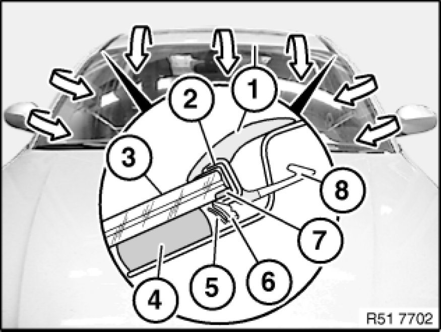
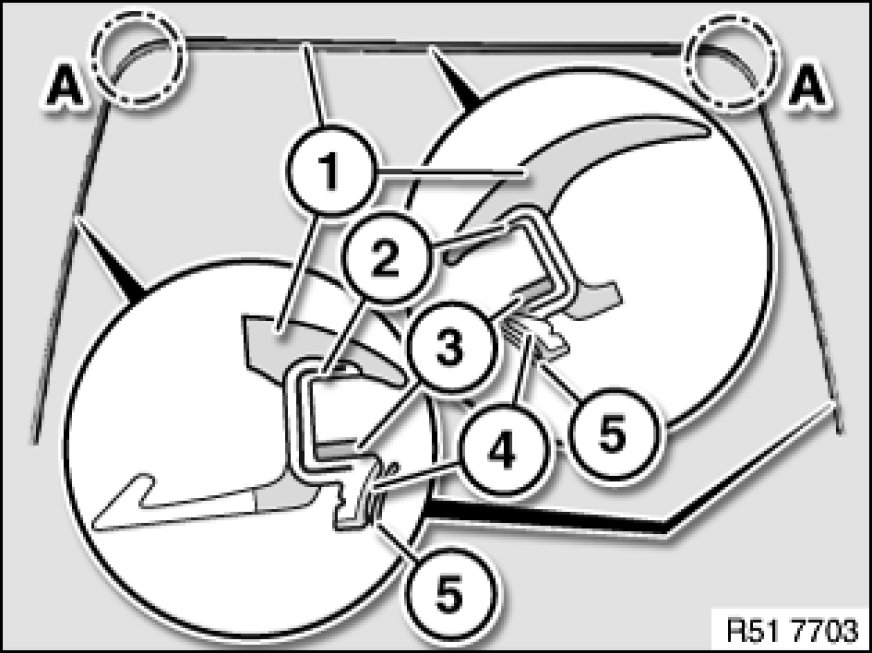

51 31 021 Removing and Installing/Replacing Rubber Frame for Windscreen
51 31 021 - Removing and installing/replacing rubber frame for windscreen

Important!
Rubber frame (1) features an aluminium section inlay (2).
Carefully unwind rubber frame (1) (windscreen breakage).
Note:
Tear-off lip (5) may be stuck to adhesive (4).
When rubber frame (1) is removed, tear-off lip (5) can tear off and remain in vehicle.
3 - Windscreen
6 - Bridge
7 - Pinched butyl
8 - Sealing lip fitted at side only

Installation Note:
Clean cutout.
Area (A) is fitted with acoustic foam material.
Pay attention to center marking on rubber frame (1) and windscreen.
Replacement of rubber frame without windscreen removal:
Detach tear-off lip (5) from rubber frame (1).
If adhesive leaks over tear-off lip (5) at bridge (4), this area must be cut out partially.
To facilitate installation, coat rubber frame (1) and body cutout with water.
Replacement of rubber frame with removed or new windscreen:
Fit rubber frame (1) with tear-off lip (4).
2 - Aluminum strip
3 - Butyl